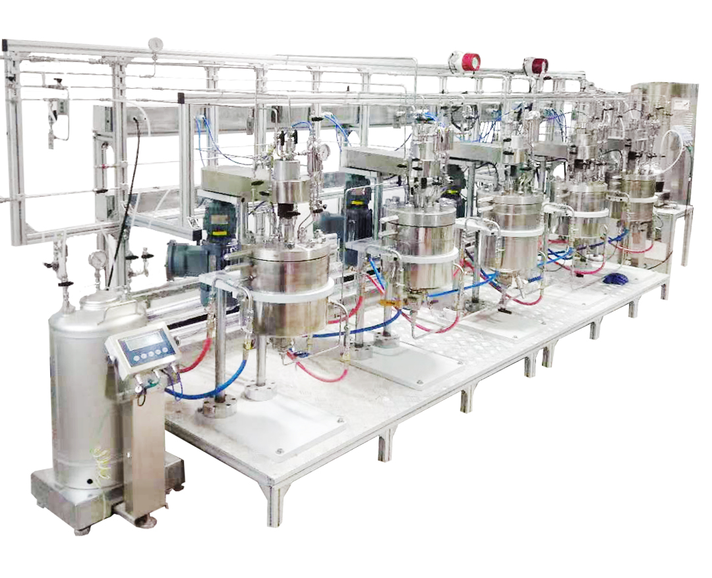
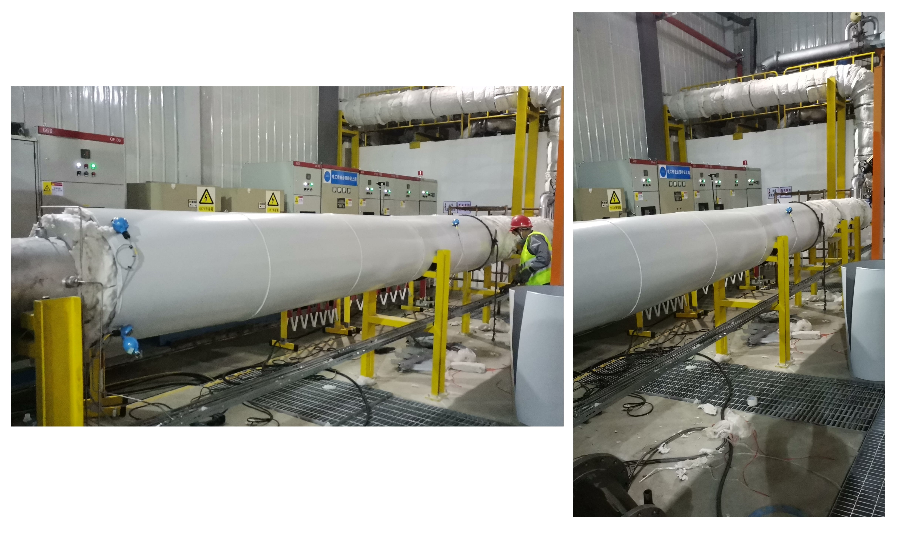
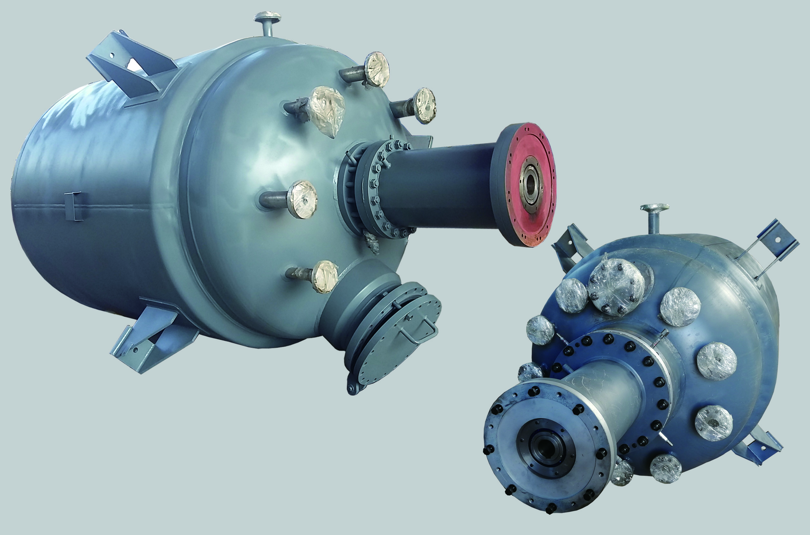

Real installations across shale oil, pharmaceutical, food, and fine chemical industries — delivered to 30+ countries.
Our Work
Every case below represents a real customer, a real process challenge, and a reactor that's been running in their facility. No renderings — actual installations.

The Problem: Exothermic hydrogenation reaction generating more heat than a standard jacket could remove. Temperature spikes threatening product quality and safety.
Our Solution: 6-layer internal cooling coil arrangement with custom hydrogenation impeller. Heat removal capacity calculated from reaction kinetics data.
The Result: 18+ months of stable operation. Batch cycle time reduced by 15%. No thermal control issues.
View Full Case Study →
The Problem: Existing distillation column couldn't achieve target alcohol purity. Low separation efficiency causing product loss.
Our Solution: Custom-designed column with optimized tray spacing, reboiler sizing, and condenser capacity for their specific feed composition.
The Result: Product purity improved from 85% to 96%. Yield increased by 12% per batch.
View Full Case Study →
The Problem: Customer needed a pressure vessel for intermediate storage at 2.0 MPa and 100°C, compliant with drinking water standards.
Our Solution: 316L stainless steel vessel with internal polishing to Ra ≤ 0.4μm. Hydrostatic test at 3.0 MPa, air tightness test verified.
The Result: Tank passed all sanitation inspections. No bacterial growth after 2 years of service.
View Full Case Study →
The Problem: Customer needed a complete production line for unsaturated polyester resin — reaction kettle, fractionating column, condenser, storage tank.
Our Solution: Full turnkey system: 10,000L reaction kettle with semi-coil jacket, vertical fractionating column, horizontal condenser, and 5,000L storage tank. All stainless steel 304.
The Result: System operational within 3 months of order. Production capacity met target from first batch.
View Full Case Study →
The Problem: Petrochemical customer needed 10–100 MPa pipeline systems for synthetic ammonia and methanol production.
Our Solution: Custom high-pressure piping fabrication with specialized welding procedures, NDT coverage per ASME B31.3, and hydrostatic testing.
The Result: Zero leaks during commissioning. System passed all pressure tests on first attempt.
View Full Case Study →
The Problem: Aggressive corrosive environment with chlorides at elevated temperature. Standard 316L insufficient for service life.
Our Solution: C-276 Hastelloy reactor with specialized welding procedure (WPS qualified), full PT and RT on all welds, electrolytic pickling and passivation.
The Result: 5+ years of service with no corrosion-related issues. Material certificate and NDT reports provided for customer audit.
View Full Case Study →The Problem: Pharmaceutical company in India needed GMP-compliant reactor for API intermediate synthesis. Surface finish Ra ≤0.4μm, full documentation package required.
Our Solution: 2,000L 316L stainless steel reactor with electropolished interior, CIP capability, sanitary connections throughout. Complete documentation package for regulatory submission.
The Result: Passed incoming inspection without observations. 14 months of trouble-free operation. Documentation accepted by QA team without additional requests.
View Full Case Study →The Problem: Japanese soy sauce manufacturer wanted to modernize fermentation process. Traditional wooden vessels had inconsistent results and required extensive manual cleaning.
Our Solution: 5,000L food-grade 304 stainless steel reactor with FDA-compliant materials, CIP system, sanitary connections, and gentle agitation for microbial health.
The Result: Batch consistency improved significantly. Cleaning time reduced from 4 hours to 1 hour. Passed food safety audit without observations after 200+ batches.
View Full Case Study →The Problem: European specialty chemicals manufacturer needed precision temperature control for crystallization. Inconsistent crystal size caused filtering problems and yield loss.
Our Solution: 8,000L crystallization reactor with ±0.5°C temperature precision, multi-zone jacket, seed crystal addition system, and low-shear agitation for crystal suspension.
The Result: Crystal size distribution narrowed by 40%. Filter cycle time reduced by 30%. Yield improved from 85% to 92%.
View Full Case Study →The Problem: Resin viscosity climbs from 100 cP to 50,000 cP over a 10-hour batch. A standard marine propeller would spin without moving material near the vessel walls, leaving dead zones where polymer fouls the vessel.
Our Solution: 10,000L carbon steel (Q345R) reactor with helical ribbon + anchor agitator sized for 3× torque overload, semi-coil jacket (40% higher heat transfer coefficient than a flat jacket), temperature-controlled jacket zones, and vacuum capability from -0.1 MPa to 0.3 MPa at up to 200°C.
The Result: Batch capacity doubled to 10,000L. Cooling phase reduced by 25%. No fouling or dead zones observed after 500+ batches.
View Full Case Study →